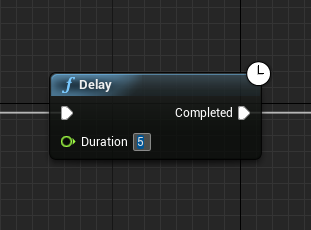
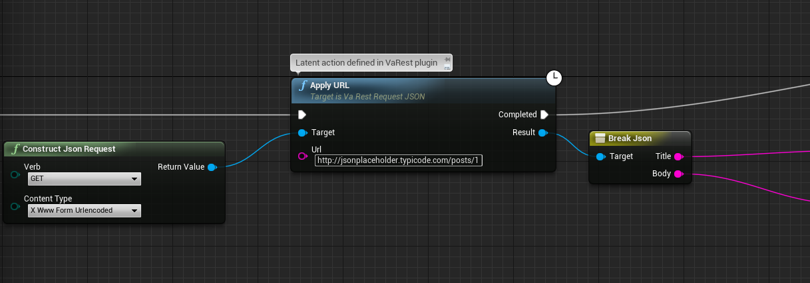
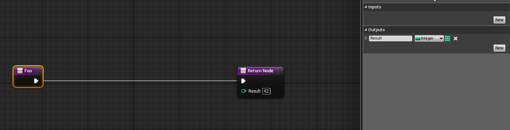
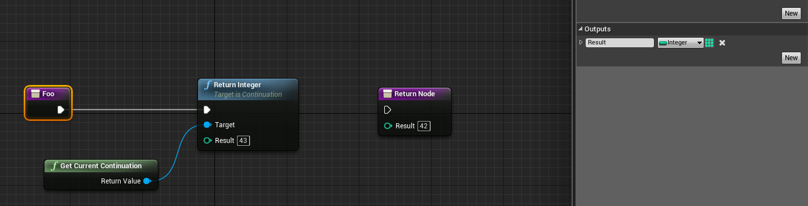
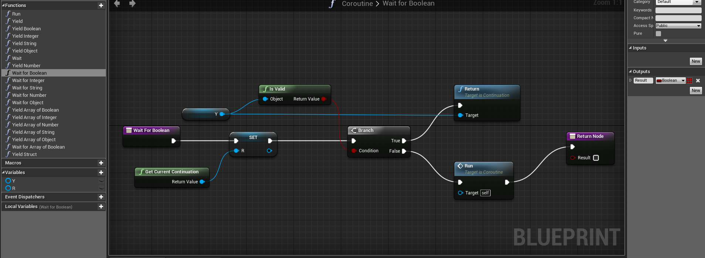
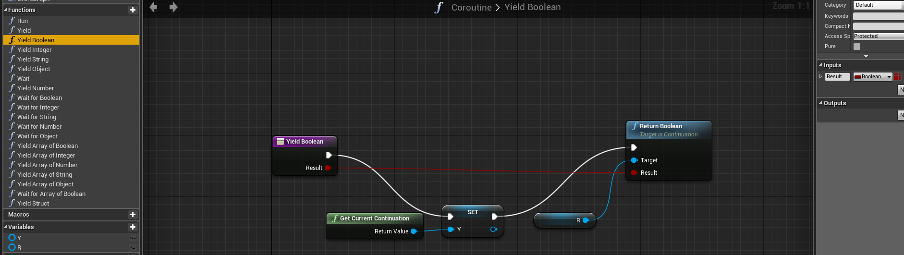

UE-4 Blueprints have a concept called "Latent Actions", one of the simplest being Delay shown below which suspends the current Blueprint for the specified number of seconds and then continues with whatever is connected to the Completed pin.

Currently all such latent actions show that clock icon. Here is another example from a plugin, which suspends the Blueprint during a network operation and then continues when the result is available:

In UE-4.10, latent action nodes are only allowed at the top level of a Blueprint "event graph". They become inaccessible inside of functions. This is unfortunate because you are forced to use essentially global variables in such cases, and since an event graph contains a bunch of parallel event handlers, this quickly becomes a mess.
Blueprint graphs are in fact compiled to byte-code which is interpreted by a virtual machine written in C++. This vm uses an explicit stack, vm functions being of the form
void FUNC(FFrame &Stack, void *Result).
The 4.10 implementation creates the vm stack on
the C++ call stack, using alloca to reserve space for the local variables. That explains why latent actions are only allowed at the
top level, namely due to the fact that the instruction pointer and nothing else is preserved while the callback is pending. By preserving
(a copy of) the entire vm call stack, this limitation can be removed. Note that local variables are shared between any such copies,
only the instruction pointer of each frame is distinct. Now the copy must be allocated on the C++ heap rather than the C++ stack in order to
persist until the callback occurs.
I've created a fork of 4.10 that makes the rather small changes necessary to enable the general use of latent actions. In addition, it contains some experimental Blueprint nodes to enable using continuations directly in blueprints. Continuations in a sense generalize function "Return" nodes and in fact can be used in place of them. Here is an example of a normal return node:

The below produces the same result via an explicit continuation (well, not quite the same - it returns 43)

Here Return Integer is a function - which however itself does not return to its caller (hence it has no output pin). As you can see Get Current Continuation gives you a Continuation object - it represents what will happen when the current function (in this case Foo) returns. This object can be stored in a variable and otherwise passed around. It provides a bunch of Return methods like Return Integer that you can call later - when you do it's as if you jump back in time and return again from the function (i.e. in this case Foo). You can actually do this more than once if you like and pass a different return value each time.
As an example we can implement coroutines with just Blueprints.

Here we have two Continuation variables Y and R. Y represents the continuation of a Yield operation and R represents that of a Wait for operation. The implementation of the Yield operations save their continuation in Y, and the Wait for in R:

Run is an abstract function the user implements in which Yield is called. Wait for is called from an event such as Tick to resume the coroutine. As you can see, the Yield operations call the R Continuation which causes the Blueprint to "return" from Wait for and the Wait for operations call the RY continuation which causes Yield to "return" and Run to resume.